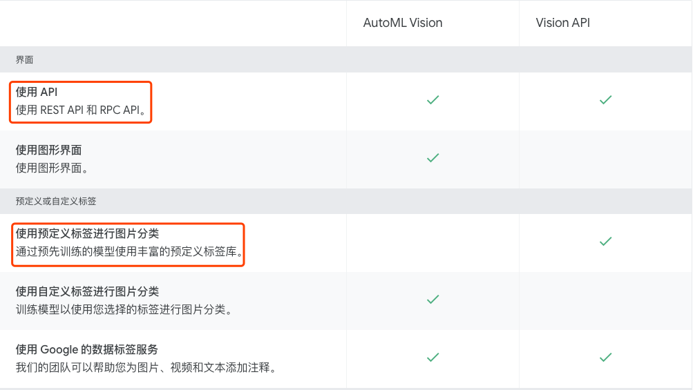
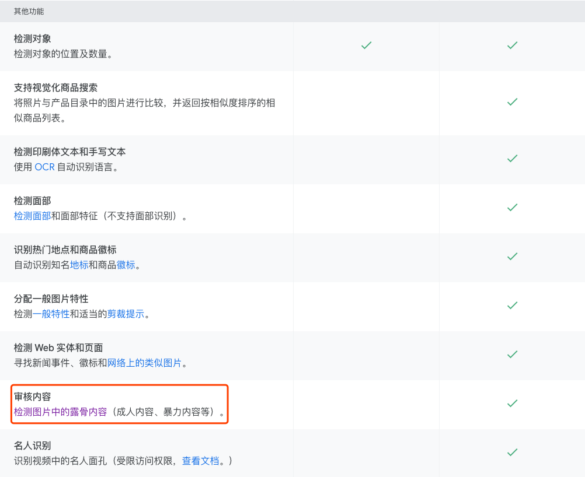
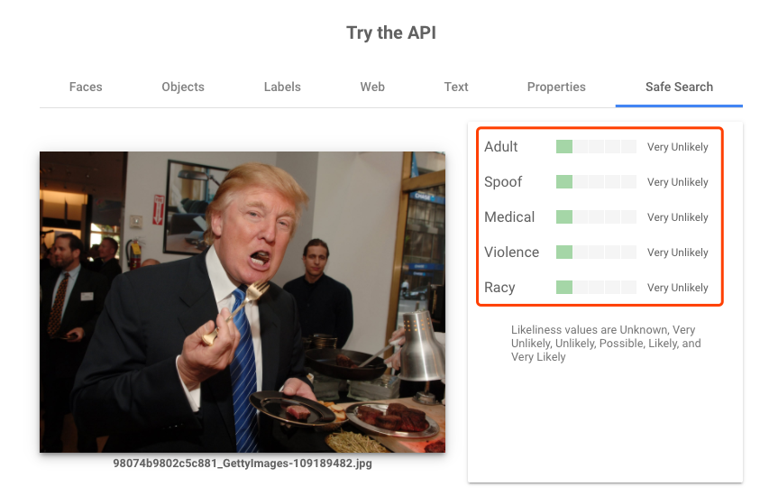
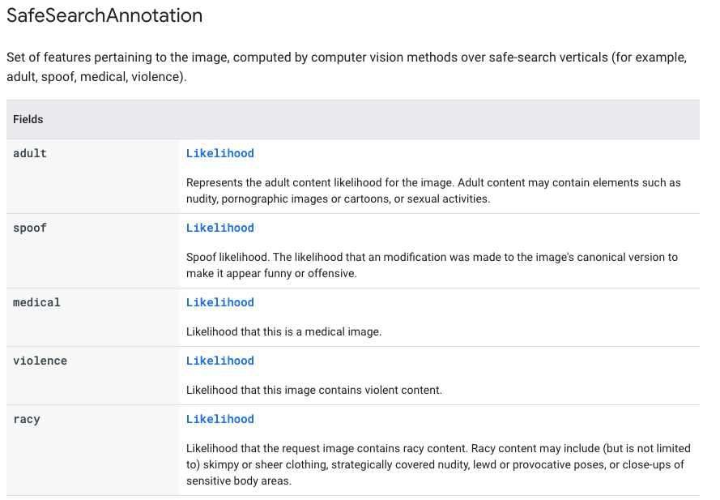
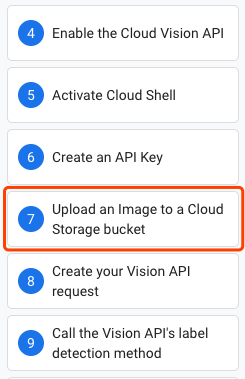
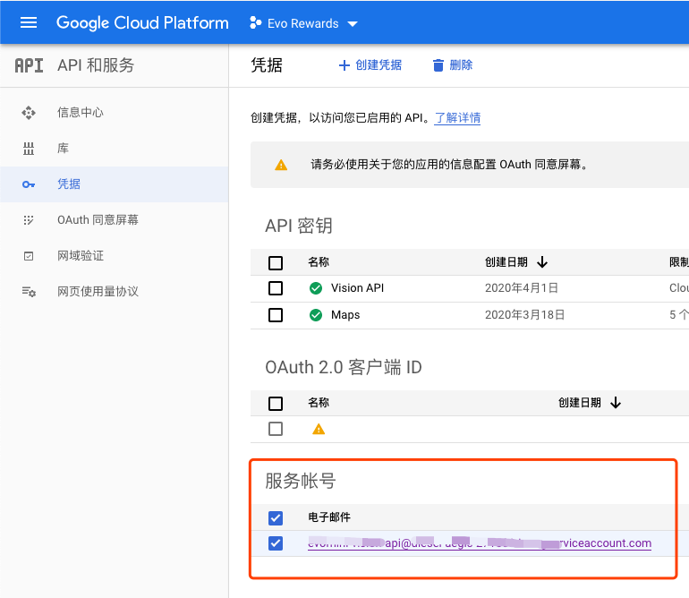
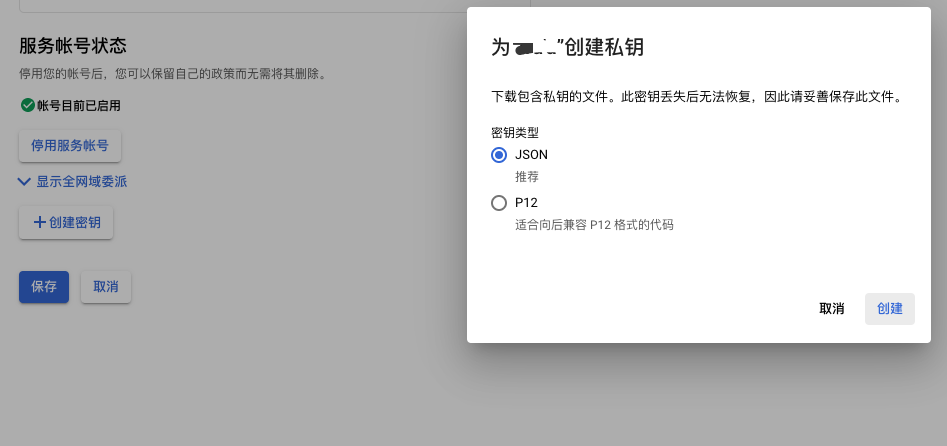

目标
业务上需要识别出文本、图像敏感内容，降低业务风险。
调用下云服务的产品。
Google Cloud Platform
GCP上，图像识别有两个产品：
- Vision API 直接使用预先训练的模型
- AutoML 迁移学习，使用用户提交的新分类数据，训练模型。
关于文本识别的产品是类似的，也分直接使用预训练模型和迁移学习重新训练。
Vision API：图像内容识别
- Google Vision API的模型已经有审核内容的能力：暴力、成人内容的识别。
- 提供API，也提供了各个语言的SDK。
- 不需要开发者训练模型。


参考：https://cloud.google.com/vision?hl=zh-cn
试用

安全搜索的分类说明

- Adult 成人内容
- Spoof 恶搞，比如恶搞政治人物
- Medical 医疗影像
- Violence 暴力内容
- Racy 猥亵类，类似成人内容
参考：https://cloud.google.com/vision/docs/reference/rpc/google.cloud.vision.v1?hl=zh-cn#google.cloud.vision.v1.SafeSearchAnnotation
对接流程

参考：https://codelabs.developers.google.com/codelabs/cloud-vision-intro/index.html?index=..%2F..cloudai&hl=zh-cn&_ga=2.102874504.925825070.1585721382-1910642988.1585296097#0
注意，图像不一定需要上传到Google的云存储。
开发对接参考：检测露骨内容（安全搜索）https://cloud.google.com/vision/docs/detecting-safe-search?hl=zh-cn
DEMO
创建服务账号、创建密钥，自动下载json文件：


code：
https://github.com/GoogleCloudPlatform/golang-samples/blob/master/vision/detect/README.md
请求次数限制
对请求内容大小有限制外，需要注意请求配额，每分钟请求数1800，QPS也就是30。如果无法满足需求，需要在平台申请增加配额。
使用默认配额，业务上需要考虑采样数据，再调用Vision API。
参考 https://cloud.google.com/vision/quotas?hl=zh-cn
请求响应时间
请求响应时间，取决于两个因素：
上传数据大小
越大越慢。
- 手机拍照软件生成的图像一般3M，建议图像压缩后上传。
- 考虑gcloud上先存储图像文件。参考 https://medium.com/bankify-tech-blog/how-to-optimize-the-speed-of-google-vision-api-cdc5e452104b
Vision API本身
对一张249K的图像进行简单压测。
$ ll demo/trump.jpg
-rw-r--r-- 1 jiahua staff 249K Apr 1 14:14 demo/trump.jpg
Go benchmark。
func BenchmarkDetectSafeSearchForFile(b *testing.B) {
for i:=0;i<b.N;i++{
result, err := DetectSafeSearchForFile("demo/trump.jpg")
assert.Equal(b, nil, err)
spew.Dump(result)
}
}
识别图像大概需要1秒。实际业务中使用，建议异步处理，事后处理，不然太影响正常体验了。
$ go test -v -bench=DetectSafeSearchForFile -benchtime=30s
BenchmarkDetectSafeSearchForFile-8 33 1011378355 ns/op
Natural Language API： 文本内容识别
https://cloud.google.com/natural-language/docs/how-to?hl=zh-cn
内容分类
内容分类没有我们关注的敏感内容分类。
参考：https://cloud.google.com/natural-language/docs/categories?hl=zh-cn
通过简单的关键字过滤吧。
Last modified on 2020-04-01